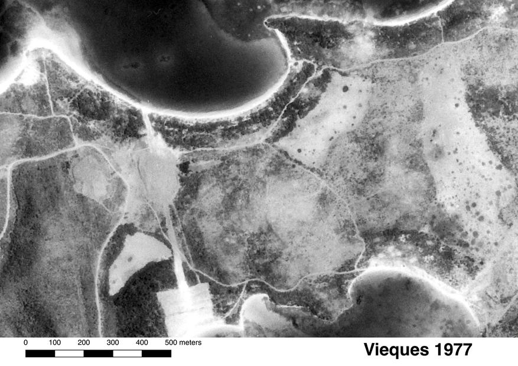

Over the three distinct time periods (1937, 1977, and 2010), significant alterations in land use and vegetation cover are evident across the landscape. The earlier photographs reveal extensive clearings and established road networks. By 2010, the imagery shows substantial secondary vegetation regrowth reclaiming previously cleared areas, alongside the distinct appearance of specific geometric structures and target zones in the central region, reflecting the area's complex history of use and subsequent natural succession.
Scroll down to advance time.
Keep scrolling to reach the modern era.
End of timeline.